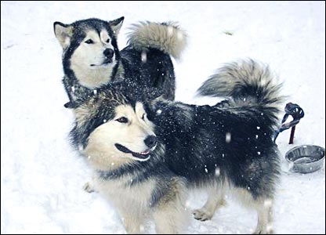
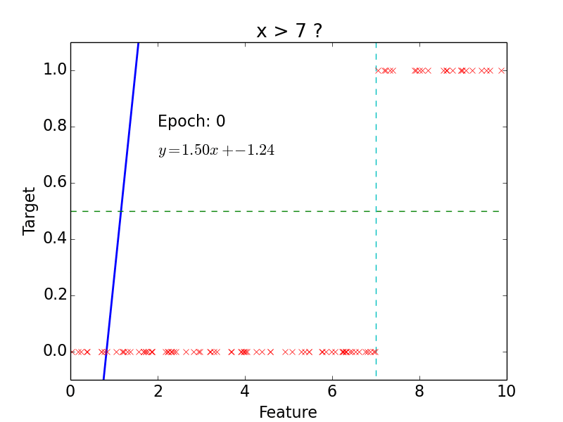
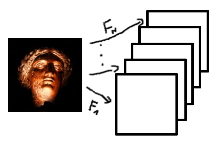
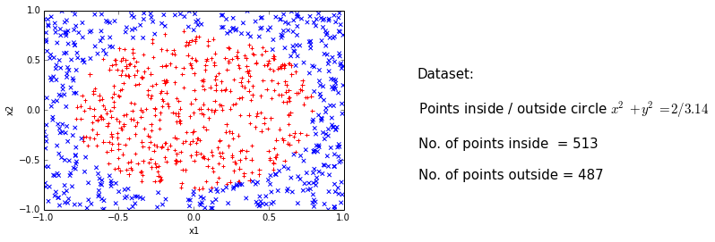
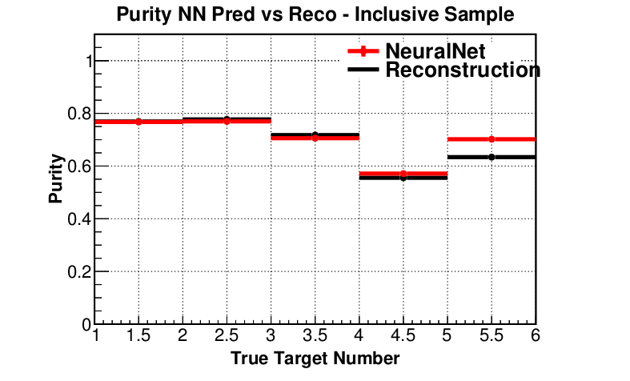
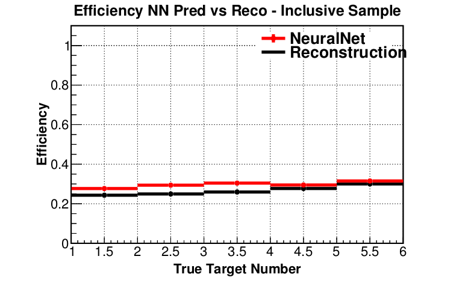
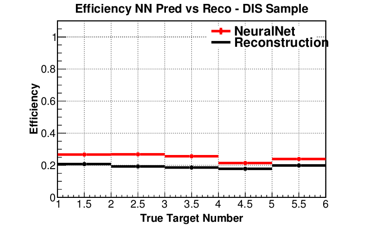

Machine Learning for MINERvA Physics Reconstruction
T. Golan
Warsaw, 11.01.2017
Outline
MINERvA Experiment
- MINERvA is a neutrino-scattering experiment at Fermilab
- Collaboration of about 50-100 physicist
- NuMI beam is used to measure cross section for neutrino-nucleus interactions
- The detector includes several different nuclear targets

Detector

Nuclear targets

Event example 1

courtesy of G. Perdue
Event example 2

courtesy of G. Perdue
Vertex Reconstruction
tracking based algorithms fail for high energy events
"by eye" method is very often more accurate
idea: use algorithms for images analysis and pattern recognition
Machine Learning
Why ML?
ImageNet is an image database
- Annual competition for classification
- 2010: 71.8%
- 2011: 74.3%
- 2012: 84.0%
- 2013: 88.2%
- 2014: 93.3%
- 2015: 96.4%
- Humans: about 95%
- Why humans fail?

Siberian Husky or Alaskan Malamute?
Understanding CNN
If you can't explain it simply, you don't understand it well enough.
Albert Einstein
- lets start from linear regression
- then introduce a single neuron and neural networks
- to finally get to convolutional neural networks
Linear Regression
Notation
- Hypothesis (for convenience \(x_0 = 1\)): \[h(x) = w_0 + w_1x_1 + ... + w_nx_n = \sum\limits_{i=0}^n w_i x_i = w^T x\]
- Cost function: \[f(w) = \frac{1}{2}\sum\limits_{i=0}^n\left(h (x^{(i)}) - y^{(i)}\right)^2\]
- Learning step (gradient descent, \(\alpha\) - training rate): \[w_j = w_j - \alpha\frac{\partial f(w)}{\partial w_j} = w_j + \alpha\sum\limits_{i=0}^n\left(y^{(i)} - h (x^{(i)})\right)x_j\]
Example

epoch = one loop over the whole training sample
for each feature vector weights are updated using gradient descent method
Classification

target: \(y = 0, 1\)
not really efficient for classification
imagine having some data ~ 100
- logistic function does better job
Why do we need neural networks?
We can do classification
We can do regression
But real problems are nonlinear
Neural Networks
Single Neuron

- neuron = activation function:
- linear
- binary step
- logistic
- tanh
- relu
- ...
- learned using gradient descent
Non-linear problem: XOR gate

Neural network for XOR

x XOR y = (x AND NOT y) OR (y AND NOT x)
Neural Networks
- more complicated problems require more neurons

Convolutional Neural Networks
Idea

Convolution

src: deeplearning.net
{kind=link}
"Clones" of a neuron looking at different part of an image
Convolution Layer

Pooling

src: wildml.com
Pooling - example

src: arxiv
CNN example

src: wildml.com
MLMPR First Attempts
What are we looking for?
The first goal is to use CNN to find vertex in nuclear target region
- Classification: upstream of target 1, target 1, plastic between target 1 and target 2, target 2...
Next steps: NC\(\pi^0\)? \(\pi\) momentum? hadron multiplicities?
Classification regions


The current best
test accuracy: 92.67 %
target 0 accuracy: 75.861 %
target 1 accuracy: 94.878 %
target 2 accuracy: 94.733 %
target 3 accuracy: 93.596 %
target 4 accuracy: 90.404 %
target 5 accuracy: 94.011 %
target 6 accuracy: 87.775 %
target 7 accuracy: 85.225 %
target 8 accuracy: 94.109 %
target 9 accuracy: 53.077 %
target 10 accuracy: 96.608 %Purity * Efficiency (preliminary)


How did we get here?
In order to attain the impossible, one must attempt the absurd.
Miguel de Cervante
- Some educated guesses
- A little bit of intuition
- And many, many attempts
- ... on 2 GPU's
- ... and later using Titan
- Titan has 18,668 NVIDIA Kepler GPUs

Summary
- ML approach outperforms track-based reconstruction
- Statistics, efficiency and purity is improved for inclusive and DIS samples
- And this is just the beginning
Backup slides
Linear Classification

Logistic Regression
Logistic function

Logistic function: \[g(z) = \frac{1}{1 + e^{-z}}\]
- Hypothesis: \[h(x) = g(w^Tx) = \frac{1}{1 + e^{-w^Tx}}\]
Classification
Probability of 1: \[P (y = 1 | x, w) = h(x)\]
Probability of 0: \[P (y = 0 | x, w) = 1 - h(x)\]
Probability: \[p (y | x, w) = (h(x))^y\cdot(1 - h(x))^{1 - y}\]
Likelihood: \[L(w) = \prod\limits_{i=0}^n p(y^{(i)} | x^{(i)}, w) = \prod\limits_{i=0}^n (h(x^{(i)}))^{y^{(i)}}\cdot(1 - h(x^{(i)}))^{1 - y^{(i)}}\]
Log-likelihood: \[l(w) = \log L(w) = \sum\limits_{i=0}^n y^{(i)}\log h(x^{(i)}) + (1 - y^{(i)})\log (1-h(x^{(i)}))\]
Learning step (maximize \(l(w)\)): \[w_j = w_j + \alpha\frac{\partial l(w)}{\partial w_j} = w_j + \alpha\sum\limits_{i=0}^n\left(y^{(i)} - h (x^{(i)})\right)x_j\]
Logistic Classification


Non-linear problem

Trick
Feature vector: \[(x,y) \rightarrow (x,y,x^2,y^2)\]
Hypothesis: \[h (x) = \frac{1}{1 + e^{-w_0 - w_1x - w_2y - w_3x^2 - w_4y^2}}\]
In general, adding extra dimension by hand would be hard / impossible. Neural networks do that for us.

AND gate
| \(x_1\) | 0 | 1 | 0 | 1 |
| \(x_2\) | 0 | 0 | 1 | 1 |
| AND | 0 | 0 | 0 | 1 |
- Hypothesis = logistic function:
\[h(x) = \frac{1}{1 + e^{-w^Tx}}\]
Intuition:
- \(w_0 < 0\)
- \(w_0 + w_1 < 0\)
- \(w_0 + w_2 < 0\)
- \(w_0 + w_1 + w_2 > 0\)
AND gate - learning

Purity (preliminary)
 
Efficiency (preliminary)
 